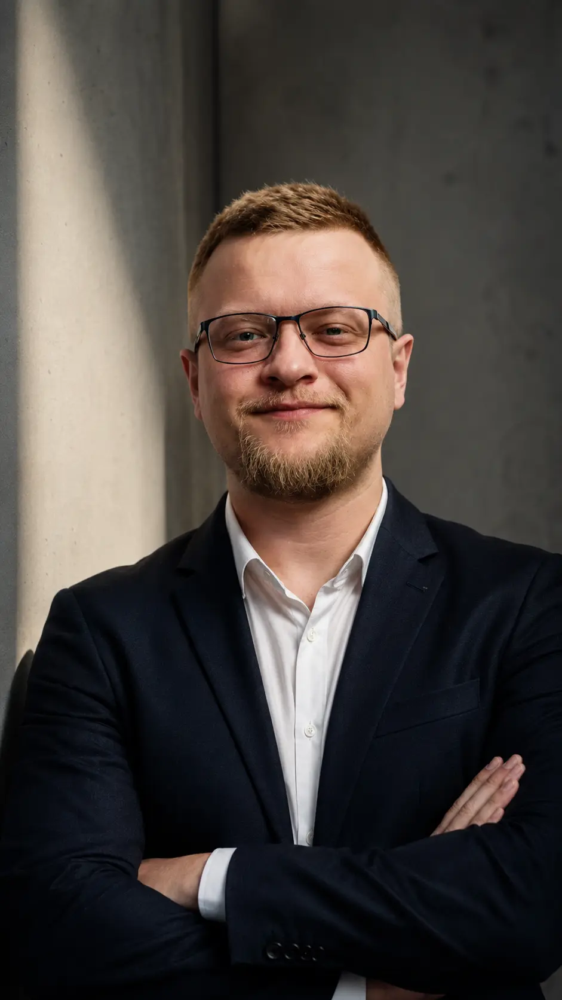

Kanstantsin Loichyts
Language services in Belarusian, Ukrainian, Russian and English.
Translation · Interpreting · Localization · Project Management · AI Training
Business · Medical · Literary · Localization · Academic · Legal
“My lingo is your bingo!”
I'm Kanstantsin Loichyts, an experienced translator, interpreter and localization consultant. I work with care, clarity and cultural sensitivity to ensure that every message resonates with its audience.
About
I am a language industry professional with a proven track record in translation, interpreting, localization and project management. My working languages are Belarusian, Ukrainian, Russian and English.
With a degree in Linguistics and certifications in Business Administration and Analysis, I combine linguistic precision with project coordination expertise. I understand that meaning goes far beyond literal accuracy.
For larger multilingual projects, I coordinate trusted teams of linguists to ensure consistency, quality and timely delivery.
Services
Translation, Editing & Proofreading
- Diplomas, certificates and licenses
- Books and literary translation
- Reports and essays
- Popular science texts
Medical & Business Interpreting
- Medical appointments and evaluations
- Business meetings and negotiations
- NGO and governmental dialogues
- Educational conferences
Localization
- Video and multimedia localization
- Game and software localization
- Language quality assurance (LQA)
Project Management
- Talent acquisition
- Project planning and delivery
- Team coordination
- Quality control
AI Training & Language Data
- Audio/video transcription
- Data annotation
- Multilingual dataset preparation
Testimonials
“Kanstantsin demonstrated depth of linguistic expertise and leadership, managing multilingual teams and delivering high-quality translations under tight deadlines.”
“His quality was consistently above expectations, and his communication remained excellent even in high-stress situations.”
Contact
Email: kastus.languageservices@gmail.com
Phone: +995 579 065 329 (WhatsApp)